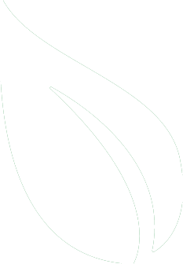

GREEN DAYS
GREEN DAYS
Ο πλανήτης μάς έχει ανάγκη και εμείς τον χρειαζόμαστε περισσότερο από ποτέ. Ανακαλύπτουμε τους ανθρώπους, τις ιδέες και τις λύσεις για να κάνουμε την επόμενη μέρα στη Γη πιο «πράσινη» και βιώσιμη.
 BEAUTY FASHION LIFESTYLE